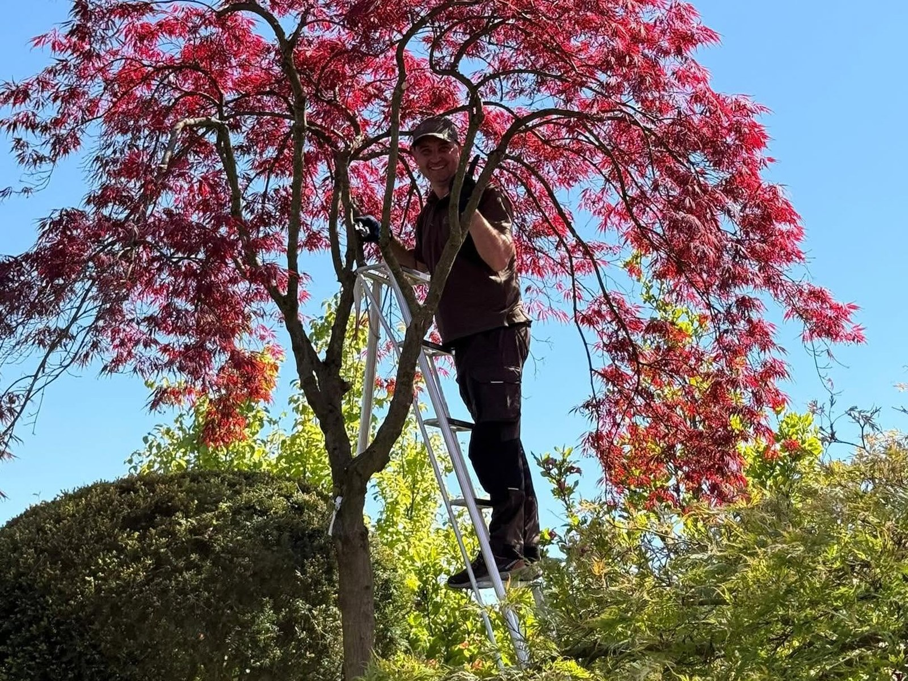
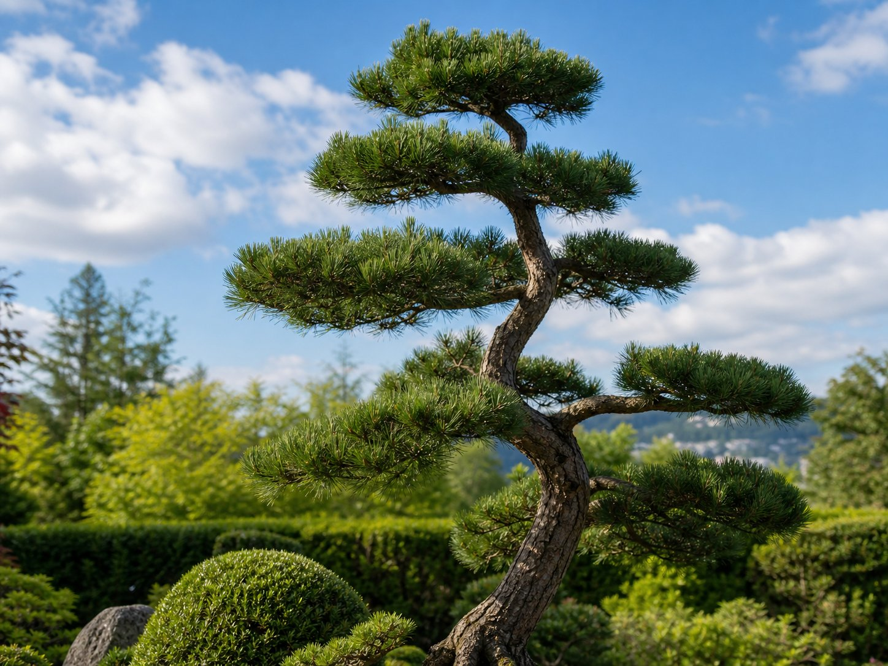

Leistungen - Niwaki, Ahorn & Nadelgehölze.
Drei Kernbereiche: Niwaki-Schnitt, japanische Ahorne (Acer palmatum) und Kiefer-Formschnitt. Alles Weitere auf Anfrage. Bäume bis 3 m; grösser nach Absprache.

Niwaki (Garten-Bonsai)
Pflege und Formung von Niwaki - Bäumen im Garten, nicht im Topf. Systematischer Schnitt lenkt die Kraft des Baumes dorthin, wo sie gebraucht wird, und gibt jeder Wolke ihren eigenen Raum für Licht und Luft.
Foto senden
Japanische Ahorne (Acer palmatum / dissectum)
Saisonale Formung und Schnitt, Entfernung von Totholz aus dem Kroneninneren, Handarbeit gegen Pilze und Moos, architektonische Kronenarbeit. Viele Ahorne in der Schweiz wachsen ohne Pflege ein - ich öffne die Krone, bevor Pilze und Feuchtigkeit Schaden anrichten.
Ahorn-Foto senden
Nadelgehölze - Schwerpunkt Kiefer (Pinus)
Alle Nadelgehölze: Pinus sylvestris, mugo, thunbergii, parviflora, densiflora, strobus. Auch Taxus/Eibe, Juniperus/Wacholder, Tanne und Fichte. Geschnitten ausschliesslich mit feinsten japanischen Werkzeugen - von Hand.
Kiefer-Foto sendenWas nicht dazugehört.
Weitere Arbeiten auf Anfrage. Kein gewöhnlicher Garten- oder Rasenunterhalt, keine grossen Pflanzungen. Ich arbeite gezielt - nicht für jeden, sondern für den, der seinen Baum ernst nimmt.
Warum die Topiarschere den Unterschied macht →Bereit, Ihren Baum zu retten?
Senden Sie mir ein Foto der Problemstelle - ich sage Ihnen kostenlos, ob und wie Ihr Baum zu retten ist. Ehrlich, ohne Verpflichtung.